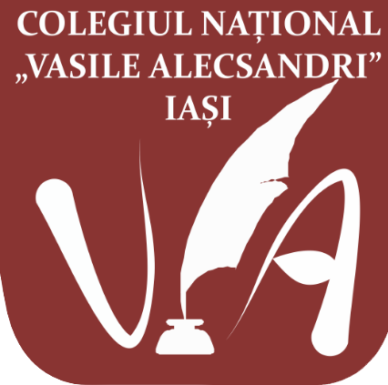
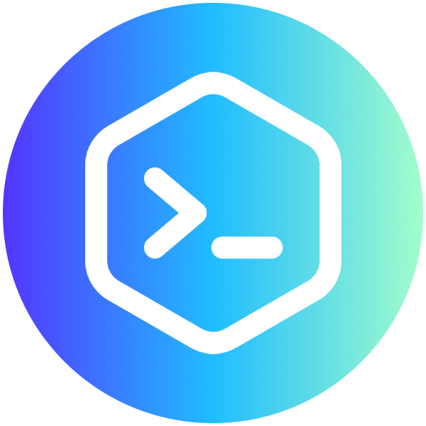
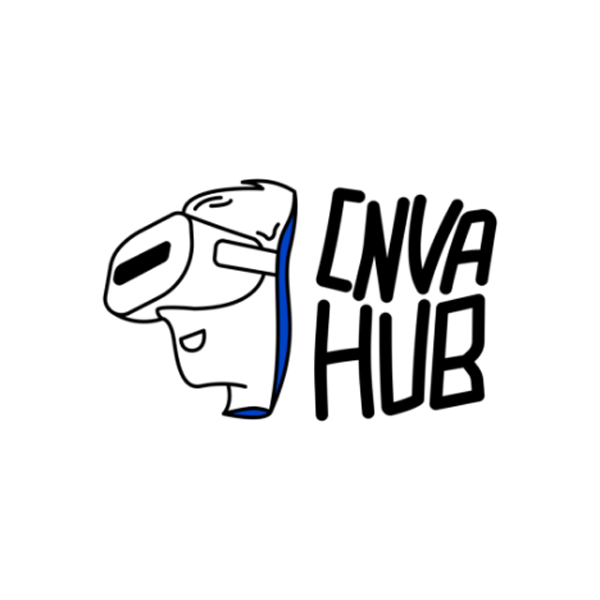

Suntem elevi ai Colegiului Național “Vasile Alecsandri” Iași, pasionați de
tehnologie și de a ajuta și alți tineri ca și noi să își descopere
pasiunile

Aceasta este cea de-a doua editie a HUB-ului nostru digital

2020

2021
Propunându-ne ca anul acesta să abordăm o variantă mult mai prietenoasă
pentru elevi!
Dacă mai ai întrebări, ni le poți lăsa pe Social Media!